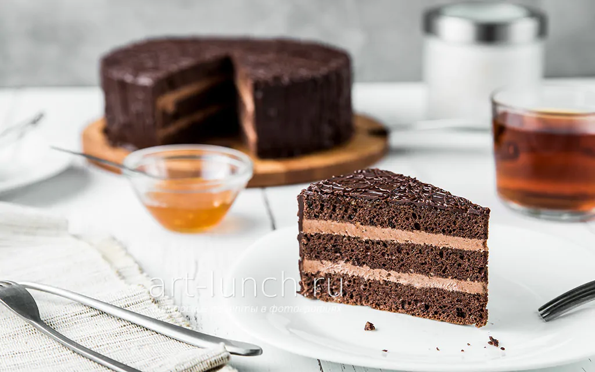

Страница каталога
Название продукта
Описание продукта
Бисквит: Масляный шоколадный бисквит («пражский»), приготовленный на основе яиц, сахара, муки, сливочного масла и какао-порошка. Коржи получаются плотными, но при этом воздушными и мелкопористыми
Крем: Масляный крем со сгущенным молоком и какао. В отличие от многих других тортов, в оригинальном креме «Прага» используется яичный желток, смешанный с водой и сгущенкой, который уваривается до густоты.
Прослойка: Тонкий слой фруктово-ягодного конфитюра (обычно абрикосового джема) под глазурью. Он придает десерту характерную кислинку и помогает глазури ровно лечь на бисквит.
Покрытие: Классический торт сверху и по бокам покрывается глянцевой шоколадной помадкой или глазурью
Характеристики продукта
Калорийность: высокая, в среднем 300 ккал.
Жиры: 17-28г (высокое содержание сливочного масла).
Углеводы: 32-65г.
